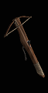
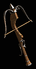

(Light Crossbow)
(Arbalest)
(Pellet Bow)

(Crossbow)
(Siege Crossbow)
(Gorgon Crossbow)

(Heavy Crossbow)
(Ballista)
(Colossus Crossbow)

(Repeating Crossbow)
(Chu-Ko-Nu)
(Demon Crossbow)
| 基礎十字弓 | |||||||
|
 |
名稱 | 雙手傷害 | 等級需求 | 力量需求 | 敏捷需求 | 最大洞數 | 武器速度 |
| 輕十字弓 (Light Crossbow) |
6-9 | 0 | 21 | 27 | 3 | -10 | |
| 石弓 (Arbalest) |
14-27 | 22 | 52 | 61 | 3 | -10 | |
| 彈丸弓 (Pellet Bow) |
28-73 | 42 | 83 | 155 | 3 | -10 | |
|
|
名稱 | 雙手傷害 | 等級需求 | 力量需求 | 敏捷需求 | 最大洞數 | 武器速度 |
| 十字弓 (Crossbow) |
9-16 | 0 | 40 | 33 | 4 | 0 | |
| 攻城十字弓 (Siege Crossbow) |
20-42 | 25 | 80 | 70 | 4 | 0 | |
| 蛇魔女十字弓 (Gorgon Crossbow) |
25-87 | 50 | 117 | 105 | 4 | 0 | |
|
 |
名稱 | 雙手傷害 | 等級需求 | 力量需求 | 敏捷需求 | 最大洞數 | 武器速度 |
| 重十字弓 (Heavy Crossbow) |
14-26 | 0 | 60 | 40 | 6 | 10 | |
| 弩弓 (Ballista) |
33-55 | 25 | 110 | 80 | 6 | 10 | |
| 巨神十字弓 (Colossus Crossbow) |
32-91 | 56 | 163 | 77 | 6 | 10 | |
|
|
名稱 | 雙手傷害 | 等級需求 | 力量需求 | 敏捷需求 | 最大洞數 | 武器速度 |
| 連射十字弓 (Repeating Crossbow) |
6-12 | 0 | 40 | 50 | 5 | -40 | |
| 巧工弩 (Chu-Ko-Nu) |
14-32 | 25 | 80 | 95 | 5 | -60 | |
| 惡魔十字弓 (Demon Crossbow) |
23-40 | 63 | 141 | 98 | 5 | -60 | |